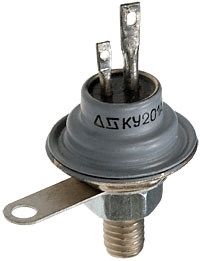

1.6.1. Устройство и принцип действия тиристоров
Тиристорами называют полупроводниковые приборы с двумя устойчивыми режимами работы (включен/ выключен), имеющие три или более (симистор) p-n–переходов. Крайняя р-область называется анодом, крайняя n-область называется катодом. Вывод средней р-области называется управляющим электродом (рис. 4.8).
Тиристор по своему принципу — прибор ключевого действия. Во включенном состоянии он подобен замкнутому ключу, а в выключенном — разомкнутому ключу. Те тиристоры, которые не имеют специальных электродов для подачи сигналов с целью изменения состояния, а имеют только два силовых электрода (анод и катод), называют неуправляемыми, или диодными тиристорами (динисторами). Иначе тиристоры называют управляемыми тиристорами, или просто тиристорами.
Тиристоры являются основными элементами в силовых устройствах электроники, которые называют также устройствами преобразовательной техники. Типичными представителями таких устройств являются управляемые выпрямители (преобразуют переменное напряжение в однонаправленное) и инверторы (преобразуют постоянное напряжение в переменное). Динисторы, как правило, используются в слаботочных импульсных устройствах.
Существует большое количество различных тиристоров. Для определенности вначале обратимся к так называемому управляемому по катоду незапираемому тиристору с тремя выводами (два силовых и один управляющий), который проводит ток только в одном направлении.
Вот упрощенное изображение структуры тиристора (рис. 4.8) и его условное графическое обозначение на схемах (рис. 4.9):
Рис. 4.8
Рис. 4.9
Тиристор имеет нелинейную вольт-амперную характеристику (ВАХ) с участком отрицательного дифференциального сопротивления (рис. 4.10). По сравнению, например, с транзисторными ключами, управление тиристором имеет некоторые особенности. Переход тиристора из одного состояния в другое в электрической цепи происходит скачком (лавинообразно) и осуществляется внешним воздействием на прибор: либо напряжением (током), либо светом (для фототиристора). После перехода тиристора в открытое состояние он остаётся в этом состоянии даже после прекращения управляющего сигнала, если протекающий через тиристор ток превышает некоторую величину, называемую током удержания. Амплитуда максимального тока некоторых тиристоров может достигать десятков тысяч ампер, а напряжение анод-катод – нескольких киловольт. После включения между выводами анод-катод тиристоров присутствует остаточное напряжение величиной обычно от 1,2 В до 2,5 В.
Рис. 4.10. Вольт-амперная характеристика тиристора
Это типичная ВАХ тиристора, проводящего в одном направлении (с управляющими электродами или без них). Она имеет несколько участков:
- Между точками 0 и 1 находится участок, соответствующий высокому сопротивлению прибора — прямое запирание.
- В точке 1 происходит включение тиристора.
- Между точками 1 и 2 находится участок с отрицательным дифференциальным сопротивлением.
- Участок между точками 2 и 3 соответствует открытому состоянию (прямой проводимости).
- В точке 2 через прибор протекает минимальный удерживающий ток Ih.
- Участок между 0 и 4 описывает режим обратного запирания прибора.
- Участок между 4 и 5 — режим обратного пробоя.